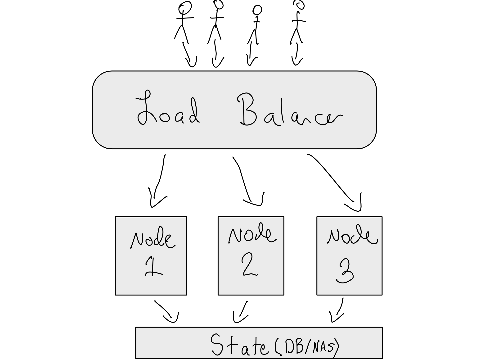

14 Scaling
What is scaling in a data science context?
When is scaling necessary?
What are options for scaling, and what are some common pain points?
At some point, your data science environment may reach the stage where you need to start thinking about how you’re going to scale your environment out to accommodate more users – or sometimes this will come up in the context of disaster recovery or maintaining service uptime.
Hopefully, if you’re at this level of complexity, you’ve got someone in the IT/Admin organization to help you. This chapter is mostly going to be focused around the conceptual components of how scaling works, and how to talk about them. We’re not going to get deep into the weeds on how to configure them.
There are two main types of scaling that get discussed. This is an example where the language definitely impedes understanding rather than furthering it.
Vertical scaling is just a fancy way of saying making a server bigger. So maybe you’re running RStudio Server or JupyterHub on a server of a particular size. Vertically scaling that server just means making the server itself bigger. If you’re running your own server, this is a huge pain. You’ve got to buy and configure a new server, and switch over. The ability to quickly vertically scale hardware is one of the best things about the cloud. Taking a server down, transferring the attached volume to a new server of a different size, and putting it back up takes just a few minutes.
Vertical scaling in the cloud is great – but there are limits. ]For example, the AWS C line of instances instances are their “compute optimized” instances that have fast CPUs and are good for general-purpose data science workloads. Generally, AWS scales their EC2 instances linearly in terms of the number of CPU cores offered on the instance, but across most reasonably-priced instance types, the instance sizes max out at 96-128 cores these days. That’s probably sufficient for many workloads, but if you’ve got an RStudio Server with 50 concurrent users doing reasonably heavy compute loads, that can quickly get eaten up.
Horizontal scaling means distributing the workload across multiple servers or machines. It is almost always more complicated than it seems like it should be, and more complicated than you want it to be. Horizontal scaling is often referred to as load balancing.
TODO: Image of vertical + horizontal scaling
Sometimes horizontal scaling is undertaken for pure scaling purposes, but sometimes it’s undertaken for cluster resilience purposes. For example, you might want the cluster to be resilient to a node randomly failing, or being taken down for maintenance. In this context, horizontal scaling is often called high availability. Like many other things, high availability is a squishy term, and different organizations have very different definitions of what it means.
For example, in one organization, high availability might just mean that there’s a robust disaster recovery plan so servers can be brought back online with little data loss. In another organization, high availability might mean having duplicate servers that aren’t physically colocated to avoid potential outages due to server issues or natural disasters. In other contexts, it might be a commitment to a particular amount of uptime.1
Spannning Multiple AZs
As the requirements for high availability get steeper, the engineering cost to make sure the service really is that resilient rise exponentially…so be careful how much uptime you’re trying to achieve.
14.0.1 How Horizontal Scaling Works
Since vertical scaling is so conceptually simple, we’re not really going to get much more into it. Horizontal scaling/load balancing is much more complicated, so we’re going to get into it here.
There are two reasons horizontal scaling is hard. The first is that you’re going to want to create one front door to your cluster. You can always just stand up different servers for different people or groups. This is a crude form of horizontal scaling, but it can be effective.
If you want people to have one front door, this is where things start to get complicated. In this case, you want the load-balancing to be invisible to the user, which means two things have to happen – you have to have one front door and you have to make sure the user’s state appears the same on all of the machines.

Making there be one front door for the cluster is pretty straightforward. You put a special kind of proxy (a load balancer) in front of your instances. Your load balancer will route sessions among the nodes in your cluster. Some load balancers can be smart about where they route people, but at a minimum, your load balancer will need to be configured with a health check/heartbeat endpoint for your product.
This is a specific endpoint in the product that returns a statement that the node is actually healthy and accepting traffic. In the absence of a heartbeat/health check, the load balancer should not route traffic to that node. Some heartbeats include additional information you might want to use to do the load balancing. All of the major cloud providers have load balancers as a service.
In AWS, the modern load balancer options are an Application Load Balancer (ALB) and a Network Load Balancer (NLB). For most data science environment applications, you’d want an ALB.
The other thing that gets difficult about invisibly load balancing a service is that state has to be symmetrically available to all of the nodes in the cluster. For example, if I’m working in RStudio Server, I expect that any session I bring up will have my data and code available to me without furthre configuration.
The details of how this is accomplished varies by the individual app, but the basic idea is to separate the server state into a backend, often some combination of a database and file storage, and allow each of the nodes in the cluster to symmetrically read and write from the state.
14.0.2 Load-Balancing configurations
One feature that is likely to be a requirement of your data science environment is sticky sessions or sticky cookies. This means that when you come through the load balancer, a cookie is added to your browser so that the load balancer can keep track of which node you were routed to. This is important in cases where the app state lives on the server – for example, you want to get back to your same instance of a shiny app in an RStudio Connect cluster. In most load balancers, this is a simple option you can just turn on.
There are a few different ways to configure load balancing for servers. The first is called active/active. This just means that all of the servers are online all of the time. So if I have two RStudio Server instances, they’re both accepting traffic all the time.2
[Graphic: network diagram of lb-config – active/active vs active/passive]
In active/passive configurations, you have two or more servers, with one set accepting traffing all the time, and the other set remaining inert until or unless the first set goes offline. This is sometimes called a blue/green or red/black configuration.3 People often really like this configuration if they have high requirements for uptime, and want to be able to do upgrades to the system behind the scenes and then just cut the traffic over at some point without an interruption in service. It is a nice idea. It is often very hard to pull off.
Disaster recovery is not really a load-balancing method, but it’s closely related. In a disaster recovery configuration, you have a server that isn’t accepting traffic, but is getting syncs of the main server’s data on a regular basis. In the event the real server were to go down, the disaster recovery server could be activated and brought in to receive traffic more quickly than the original server could be revived.
14.1 Container Deployment + Orchestration
One tool that comes up increasingly frequently when talking about scaling is Kubernetes (sometimes abbreviated as K8S).4 Kubernetes is the way people orchestrate Docker containers in production settings.5 So basically that it’s the way to put containers into production when you want more than one to interact – say you’ve got an app that separately has a database and a front end in different containers, or, like in this chapter, multiple load-balanced instances of the same containers.
While the operational details of Kubernetes are very different from the horizontal scaling patterns we’ve discussed so far in this chapter, the conceptual requirements are the same.
TODO: Diagram of K8S
Many people like Kubernetes because of its declarative nature. If you recall from the section on Infrastructure as Code, declarative code allows you to make a statement about what the thing is you want and just get it, instead of specifying the details of how to get there.
Of course, in operation this all can get much more complicated, but once you’ve got the right containers, Kubernetes makes it easy to say, “Ok, I want one instance of my load balancer container connected to three instances of my compute container with the same volume connected to all three.”
If you’re reading this and are extremely excited about Kubernetes – that’s great! Kubernetes does make a lot of things easy that used to be hard. Just know, networking configuration is the place you’re likely to get tripped up. You’ve got to deal with networking into the cluster, networking among the containers inside the cluster, and then networking within each container.
Complicated kubernetes networking configurations are not for the faint of heart.
For individual data scientists, Kubernetes is usually overkill for the type of work you’re doing. If you find yourself in this territory, it’s likely you should try to work with you organization’s IT/Admin group.
One of the nice abstraction layers Kubernetes provides is that in Kubernetes, you provide declarative statements of the containers you want to run, and any requirements you have. You separately register actual hardware with the cluster, and Kubernetes takes care of placing the conatiners onto the hardware depending on what you’ve got available.
In practice, unless you’re part of a very sophisticated IT organization, you’ll almost certainly use Kubernetes via one of the cloud providers’ Kubernetes clusters as a service. AWS’s is called Elastic Kubernetes Service (EKS).6
One really nice thing about using these Kubernetes clusters as a service is that adding more compute power to your cluster is generally as easy as a few button clicks. On the other hand, that also makes it dangerous from a cost perspective.
It is possible to define a Kubernetes cluster “on the fly” and deploy things to a cluster in an ad hoc way. I wouldn’t recommend this for any production system. Helm is the standard tool for defining kubernetes deployments in code, and Helmfile is a templating system for Helm.
So, for example, if you had a standard “Shiny Server” that was one load balancer containers, two containers each running a Shiny app, and a volume mounted to both, you would define that cluster in Helm. If you wanted to be able to template that Helm code for different clusters, you’d use Helmfile.
14.2 Exercises
TODO
Often called nines of uptime, referring to the proportion of the time that the service is guaranteed to be online out of a year. So a one-nine service is up 90% of the time, allowing for 36 days of downtime a year. a five-nine service is up for 99.999% of the time, allowing for only about 5 1/4 minutes of downtime a year.↩︎
If the service you’re configuring does internal routing, like RStudio Workbench, you also may need to select whether you have one or several primary nodes. A primary node is one that accepts traffic from the load balancer and routes it internally. You could have just one node in the cluster serve as primary or several. Unless there’s a good reason to prefer one, it’s usually advantageous to do several, because it adds one layer of resilience to your cluster.↩︎
Blue/Green and Red/Black aren’t the same things, but the differences are deep in the weeds…and not even consistently used.↩︎
Apparently, Kubernetes is an ancient Greek word for “helmsman”, so cutesy nautical puns abound. See, for example, the Kubernetes logo, which is a ship wheel.↩︎
Pedants will be delighted in all the ways this is technically incorrect. Some people use other tools like Docker Swarm in development, but rarely in production. Kubernetes also is not limited to Docker containers. As of this writing in 2022, those are irrelevant details for most people.↩︎
If you aren’t using EKS, Azures AKS, or Google’s GKE, the main other competitor is Oracle’s OpenShift, which some organizations have running in on-prem Kubernetes clusters.↩︎